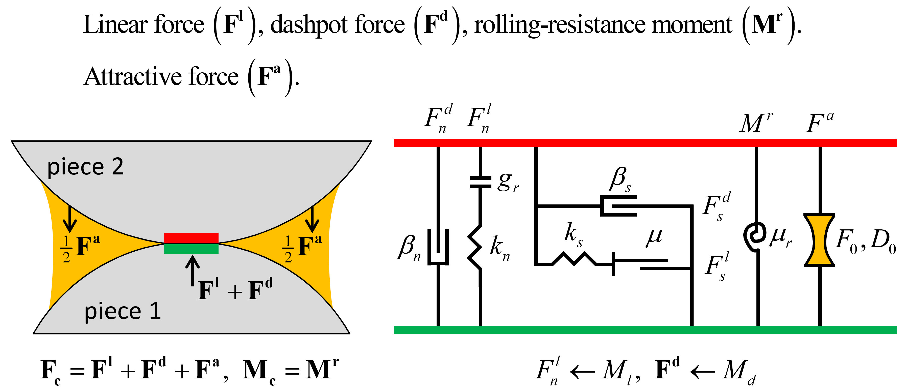
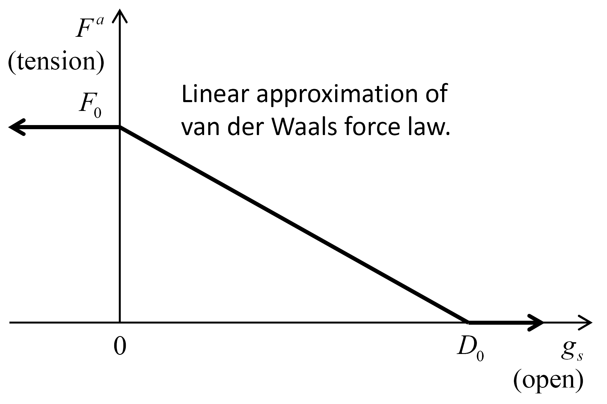

黏附滚动阻力线性模型
黏附滚动阻力线性模型以 滚动阻力线性（rolling resistance linear） 模型为基础，并增加了黏附分量。它是一种 基于线性的模型（linear-based model），可安装在球-球和球-面片接触上，在命令和 FISH 中名称为 arrlinear。
引言
黏附滚动阻力线性模型提供了一种简单的黏聚颗粒材料，它基于 [Gilabert2007] 的二维模型。黏聚力来自短程吸引，这是对 van der Waals 力定律的线性近似。短程吸引与 PFC 粘结材料（bonded materials） 的不同之处在于没有“断裂”的概念——也就是说，只要相互作用的表面进入指定的吸引范围，吸引力就始终存在。[Gilabert2007] 指出，黏聚颗粒集合体的平衡密度变化远大于相应的无黏聚颗粒集合体，因为黏聚颗粒可能形成疏松的、类固体的黏聚团粒。此类颗粒系统可在比无黏聚颗粒系统（典型固体分数为 58-64%）更低的固体分数（低至 25-30%）下保持力学平衡。黏聚颗粒材料的数值模拟研究远少于无黏聚材料。本模型涵盖这两类材料，可用于研究多种黏附颗粒材料的宏观行为，包括黏聚粉末（如静电复印调色剂，其黏聚源于 van der Waals 相互作用）和湿珠堆积体（其黏聚源于连接相邻颗粒的液桥）。关于黏附颗粒材料的结构与力学性质以及实验室研究过的其他黏附堆积体示例，请参见 [Gilabert2007] 和 [Gilabert2008]。
行为概要
黏附滚动阻力线性模型通过在 滚动阻力线性（rolling resistance linear） 模型上增加黏聚分量，以短程吸引作为 van der Waals 力的线性近似，从而提供黏聚颗粒材料的行为（见 图 1（Figure 1））。黏聚分量由两个参数表征：最大吸引力 \((F_0)\) 和吸引范围 \((D_0)\)，如 图 2（Figure 2） 所示。


图 1：黏附滚动阻力线性模型的行为与流变组分。图中给出作用在片体 2 上的力，作用在片体 1 上的力大小相等、方向相反。


图 2：黏附滚动阻力线性模型的吸引力与表面间隙关系。
活动-删除准则
当且仅当表面间隙小于吸引范围 \((D_0)\) 时，具有黏附滚动阻力线性模型的接触才是活动的。对非活动接触会跳过力-位移定律。表面间隙见 线性（linear） 公式中的 该（this） 图。当参考间隙为零时，名义表面与片体表面重合。若使用 接触模型分配表（CMAT） 创建 arrlinear 材料[1]，则会在表面间隙小于或等于 \(D_0\)[2] 的片体之间自动创建带 arrlinear 模型及其相关属性的接触。
力-位移定律
黏附滚动阻力线性模型的力-位移定律按如下方式更新接触力和力矩：
其中 \(\mathbf{F^l}\) 是线性力，\(\mathbf{F^d}\) 是阻尼力，\(\mathbf{F^a}\) 是吸引力，\(\mathbf{M^r}\) 是滚动阻力矩。线性力、阻尼力和滚动阻力矩按 滚动阻力线性（rolling resistance linear） 模型更新，而吸引力按如下方式更新。
吸引力沿法向方向作用：
其中 \(F^a > 0\) 表示拉伸（吸引）。
更新吸引力（见 图 2（Figure 2））：
其中 \(g_s\) 是表面间隙。
能量分区
除滚动阻力线性模型的能量分区外，黏附滚动阻力线性模型还提供以下能量分区：
- 黏附能量 \(E_a\)，定义为吸引力对相互接触片体所做的功。
若激活能量跟踪，该能量分区按如下方式更新。
更新黏附能量：
(4)\[E_a := E_a - \tfrac{1}{2} \bigl( (F^a)_o + F^a \bigr) \Delta \delta _n\]其中 \((F^a)_o\) 是时间步开始时的吸引力，\(\Delta \delta _n\) 是“接触解析（Contact Resolution）”一节中 该（this） 公式的相对法向位移增量。注意 \(E_a\) 可正可负，约定吸引力对相互接触片体所做的功为正。
关于这些分区在命令和 FISH 中所用关键字的附加信息，见下表。
| 关键字 | 符号 | 说明 | 范围 | 累积 |
|---|---|---|---|---|
| 线性组： | ||||
energy‑strain |
\(E_{k}\) | 应变能 | \([0.0,+\infty)\) | NO |
energy‑slip |
\(E_{\mu}\) | 滑动耗散的总能量 | \((-\infty,0.0]\) | YES |
| 阻尼器组： | ||||
energy‑dashpot |
\(E_{\beta}\) | 阻尼器耗散的总能量 | \((-\infty,0.0]\) | YES |
| 滚动阻力组： | ||||
energy‑rrstrain |
\(E_{k_r}\) | 滚动应变能 | \([0.0,+\infty)\) | NO |
energy‑rrslip |
\(E_{\mu_r}\) | 滚动滑动耗散的总能量 | \((-\infty,0.0]\) | YES |
| 黏附组： | ||||
energy‑adhesive |
\(E_a\) | 黏附能量 | \((-\infty,+\infty)\) | YES |
属性
黏附滚动阻力线性接触模型定义的属性在下表中简要列出，供快速查阅；表中各列信息的说明见 接触属性（Contact Properties） 一节。表面可继承属性到接触模型属性的映射也在下文讨论。
| 关键字 | 符号 | 说明 | 类型 | 范围 | 默认 | 可修改 | 可继承 |
|---|---|---|---|---|---|---|---|
| arrlinear | 模型名称 | ||||||
| 线性组： | |||||||
| kn | \(k_n\) | 法向刚度 [力/长度] | FLT | \([0.0,+\infty)\) | 0.0 | YES | YES |
| ks | \(k_s\) | 剪切刚度 [力/长度] | FLT | \([0.0,+\infty)\) | 0.0 | YES | YES |
| fric | \(\mu\) | 摩擦系数 [-] | FLT | \([0.0,+\infty)\) | 0.0 | YES | YES |
| rgap | \(g_r\) | 参考间隙 [长度] | FLT | \(\mathbb{R}\) | 0.0 | YES | NO |
| lin_mode | \(M_l\) | 法向力更新模式 [-] | INT | \(\{0,1\}\) | 0 | YES | NO |
| \(\;\;\;\;\;\;\begin{cases} \mbox{0: update is absolute} \\ \mbox{1: update is incremental} \end{cases}\) | |||||||
| emod | \(E^*\) | 有效模量 [力/面积] | FLT | \([0.0,+\infty)\) | 0.0 | NO | N/A |
| kratio | \(\kappa^*\) | 法向与剪切刚度比 [-] | FLT | \([0.0,+\infty)^*\) | 0.0 \(^*\) | NO | N/A |
| \(\kappa^* \equiv \frac{k_n}{k_s}\) | |||||||
| lin_slip | \(s\) | 滑动状态 [-] | BOOL | {false,true} | false | NO | N/A |
| \(\;\;\;\;\;\;\begin{cases} \mbox{true: slipping} \\ \mbox{false: not slipping} \end{cases}\) | |||||||
| lin_force | \(\mathbf{F^l}\) | 线性力（接触面坐标系） | VEC | \(\mathbb{R}^3\) | \(\mathbf{0}\) | YES | NO |
| \(\left( -F_n^l,F_{ss}^l,F_{st}^l \right) \quad \left(\mbox{2D model: } F_{ss}^l \equiv 0 \right)\) | |||||||
| user_area | \(A\) | 恒定面积 [长度*长度] | FLT | \((0.0,+\infty)\) | 0.0 | YES | NO |
| 阻尼器组： | |||||||
| dp_nratio | \(\beta_n\) | 法向临界阻尼比 [-] | FLT | \([0.0,1.0]\) | 0.0 | YES | NO |
| dp_sratio | \(\beta_s\) | 剪切临界阻尼比 [-] | FLT | \([0.0,1.0]\) | 0.0 | YES | NO |
| dp_mode | \(M_d\) | 阻尼器模式 [-] | INT | {0,1,2,3} | 0 | YES | NO |
| \(\;\;\;\;\;\;\begin{cases} \mbox{0: full normal & full shear} \\ \mbox{1: no-tension normal & full shear} \\ \mbox{2: full normal & slip-cut shear} \\ \mbox{3: no-tension normal & slip-cut shear} \end{cases}\) | |||||||
| dp_force | \(\mathbf{F^d}\) | 阻尼力（接触面坐标系） | VEC | \(\mathbb{R}^3\) | \(\mathbf{0}\) | NO | NO |
| \(\left( -F_n^d,F_{ss}^d,F_{st}^d \right) \quad \left(\mbox{2D model: } F_{ss}^d \equiv 0 \right)\) | |||||||
| 滚动阻力组： | |||||||
| rr_kr | \(k_r\) | 滚动阻力刚度 [力*长度] | FLT | \([0.0,+\infty)\) | 0.0 | NO | NO |
| rr_fric | \(\mu_r\) | 滚动摩擦系数 [-] | FLT | \([0.0,+\infty)\) | 0.0 | YES | YES |
| rr_slip | \(s_r\) | 滚动滑动状态 [-] | BOOL | {false,true} | false | NO | N/A |
| rr_moment | \(\mathbf{M^r}\) | 滚动阻力矩（接触面坐标系） | VEC | \(\mathbb{R}^3\) | \(\mathbf{0}\) | YES | NO |
| \(\left( 0,M_{bs}^r,M_{bt}^r \right) \quad \left(\mbox{2D model: } M_{bt}^r \equiv 0 \right)\) | |||||||
| 黏附组： | |||||||
| adh_f0 | \(F_0\) | 最大吸引力 [力] | FLT | \([0.0,+\infty)\) | 0.0 | YES | NO |
| adh_d0 | \(D_0\) | 吸引范围 [长度] | FLT | \([0.0,+\infty)\) | 0.0 | YES | NO |
| adh_force | \(F^a\) | 吸引力 \((F^a \ge 0)\) [力] | FLT | \([0.0,+\infty)\) | 0.0 | NO | NO |
| \(^*\) 按惯例，若法向或剪切刚度任一为 0，则 \(\kappa^* = 0.0\)。 | |||||||
注意
在进行力-位移计算期间，作用在体上的不平衡力会被累积。修改接触模型中存储的力不会立即改变这些不平衡力。因此，对 \(\mathbf{F^l}\) 的任何改动可能只在下一个力-位移计算中生效。当 \(M_l = 0\) 时，线性力的法向分量会在下一个力-位移计算中被自动覆盖。
表面属性继承
线性刚度 \(k_n\) 和 \(k_s\) 以及摩擦系数 \(\mu\) 可从相互接触的片体继承。细节见 线性（linear） 公式中的 该（this） 一节。此外，若剪切刚度 \(k_s\) 被修改，滚动阻力刚度 \(k_r\) 也会更新。
方法
黏附滚动阻力线性模型的方法与线性模型的方法相同。
| 方法 | 参数 | 符号 | 类型 | 范围 | 默认 | 说明 |
|---|---|---|---|---|---|---|
| area | 把 user_area 设为该面积 | |||||
| deformability | 设置可变形性 | |||||
| emod | \(E^*\) | FLT | \([0.0,+\infty)\) | N/A | 有效模量 | |
| kratio | \(\kappa^*\) | FLT | \([0.0,+\infty)^*\) | N/A | 法向与剪切刚度比 | |
| \(^*\) 按惯例，设置 \(\kappa^* = 0.0\) 会设置 \(k_s = 0.0\)，但不改变 \(k_n\)。 | ||||||
面积
通过当前接触面积设置 user_area 属性。此操作意味着接触面积保持不变，且不随片体尺寸/几何的变化而改变。为了按该面积重新计算刚度，随后应调用 deformabilty 方法。
可变形性
这些方法的细节见 线性（linear） 公式中的该（this）一节。
回调事件
黏附滚动阻力线性模型定义的回调事件与线性模型定义的回调事件相同。
| 事件 | 数组槽位 | 值类型 | 范围 | 说明 |
|---|---|---|---|---|
| contact_activated | 接触已变为活动 | |||
| 1 | C_PNT | N/A | 接触指针 | |
| slip_change | 滑动状态已改变 | |||
| 1 | C_PNT | N/A | 接触指针 | |
| 2 | INT | {0,1} | 滑动变化模式 | |
| \(\;\;\;\;\;\;\begin{cases} \mbox{0: slip has initiated} \\ \mbox{1: slip has ended} \end{cases}\) | ||||
使用与验证示例
示例 黏附滚动阻力线性接触模型：休止角（Adhesive Rolling Resistance Linear Contact Model: Repose Angle） 研究最大吸引力对颗粒堆休止角的影响。
模型概要
黏附滚动阻力线性模型方法的字母顺序列表见此处（here）。 黏附滚动阻力线性模型属性的字母顺序列表见此处（here）。
参考文献
| [Gilabert2007] | (1, 2, 3) Gilabert, F.A., J.-N. Roux, and A. Castellanos, “Computer Simulation of Model Cohesive Powders: Influence of Assembling Procedure and Contact Laws on Low Consolidation States,” Physical Review E, 75, 011303, 2007. |
| [Gilabert2008] | Gilabert, F.A., J.-N. Roux, and A. Castellanos, “Computer Simulation of Model Cohesive Powders: Plastic Consolidation, Structural Changes and Elasticity under Isotropic Loads,” Physical Review E, 78, 031305, 2008. |
尾注
| [1] | arrlinear 材料定义为球和/或刚性团簇的集合，其中三种接触类型（球-球、球-子颗粒和子颗粒-子颗粒）都采用 arrlinear 接触模型。此类材料通过三次 cmat default 命令创建，每种接触类型一次，每条命令都指定模型为 arrlinear 并设定模型属性。由球集合构成的 arrlinear 材料在 黏附滚动阻力线性接触模型：休止角（Adhesive Rolling Resistance Linear Contact Model: Repose Angle） 示例中创建。 |
| [2] | CMAT 的邻近距离用于强制在模拟过程中创建接触时应保持的最小距离。用 CMAT 创建 arrlinear 材料时，除非直接用 cmat default proximity 命令指定更大的邻近距离，否则邻近距离自动设为等于 \(D_0 + g_r\)。 |
| 这些内容对您有帮助吗？… | FLAC3D © 2019, Itasca | 原文更新于 2020 年 10 月 8 日 |